CISCO Configuring Interfaces
CISCO routers, firewalls, switches etc all have a number of interfaces (points at which we connect cables to!) that require configuring in order to operate effectively.
Lab Setup
- GNS3 as the network emulation software.
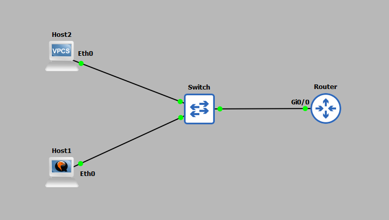
- I have my PC (host1).
- A CISCO router on IOSv 15.9 (router).
- An additional PC (host2).
- A CISCO layer 2 switch (Switch).
IP Schema
The first thing we need to decide on in order to get these systems talking is an IP addressing scheme. For this example I am going to use a /24 subnet on address 192.168.10.0. This gives us 254 useable addresses (256 - broadcast address - network address). The subnet mask will be 255.255.255.0.IP Configuration
To IP address the router we must configure the physical interface connected (Gi0/0) to the network (the switch) with the network we want it to be part of. To do this we first must enter CONFIGURATION MODE: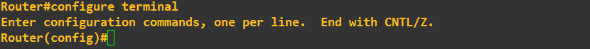
We can now access the interface and configure it to our liking, in this case setting the IP address to 192.168.10.254 255.255.255.0.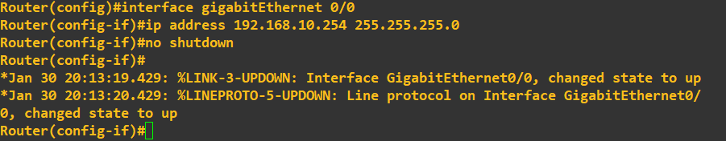
Notice the 'no shutdown' command was used after addressing the interface Gi0/0, this command ultimately turns the port on.enable
configure terminal
interface gigabitEthernet 0/0
ip address 192.168.10.254 255.255.255.0
no shutdown
The 'enable' command is used above to move from USER EXEC mode to PRIVILEGED EXEC mode. At this point the router is ready to route traffic, we just need to statically address the two hosts to the same subnet, but different IP address. Host1 is statically assigned the IP 192.168.10.1/24 with host2 assigned 192.168.10.2/24. Do not worry if you do not recognise the commands used on host2, it's a simple PC simulator with little functionality but useful in demos like this. Host1 setup is as follows:
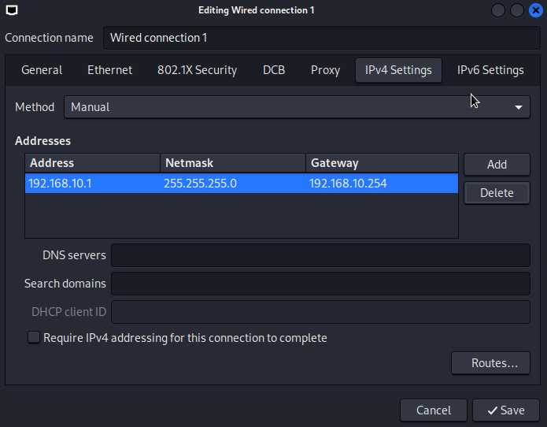
Host2 setup is as follows: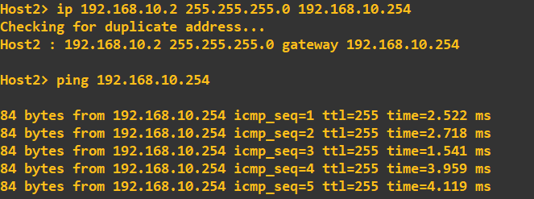
Finally, a connectivity check from the router to both hosts can be done using ping from the routers CLI.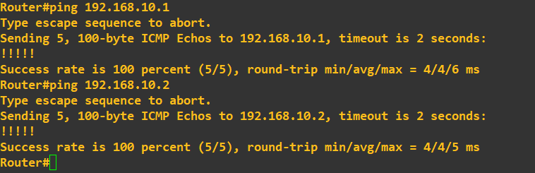
At this point we can be happy that the routers interface has a basic IP configuration and can communicate with hosts on its network.Network Automation
If you are anything like me, configuring tons of interfaces manually probably does not appear appealing, thus the use of network automation can reduce the burden. Consider the following topology: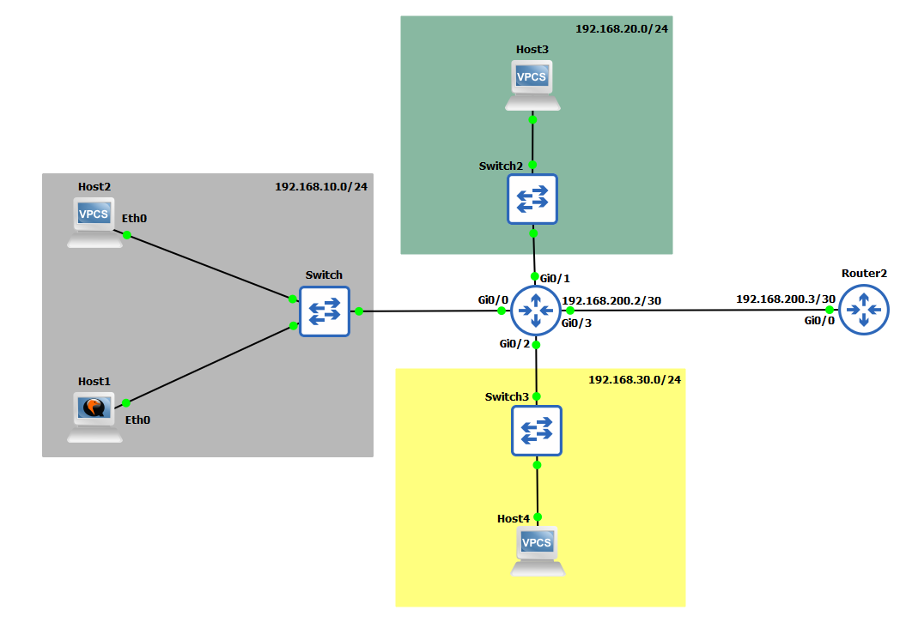
Currently, only the 192.168.10.0/24 subnet is configured. Utilising Python with the telnetlib and getpass module we can automate the configuration of our central CISCO router with a small script. To do this we must first setup a method in which we will allow a remote a connection to the router. This example uses TELNET, however, it is never a good idea to use unencrypted communications, especially when configuring a central router such as this.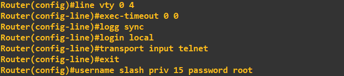
This combination of commands has simply enabled the virtual lines 0 to 4 (lines that allow remote connections) to accept TELNET connections; set the console to never timeout (exec timeout 0 0); not break our line output when typing in commands (logg sync) and finally to use the LOCAL database for login attempts. We add an account with the username 'slash' and the password 'root' with a privilege level of 15 (highest) to the LOCAL database. To check our TELNET lines are working, we can attempt a TELNET connection from one of our hosts. In the example below I created a TELNET session from host1 to the routers IP.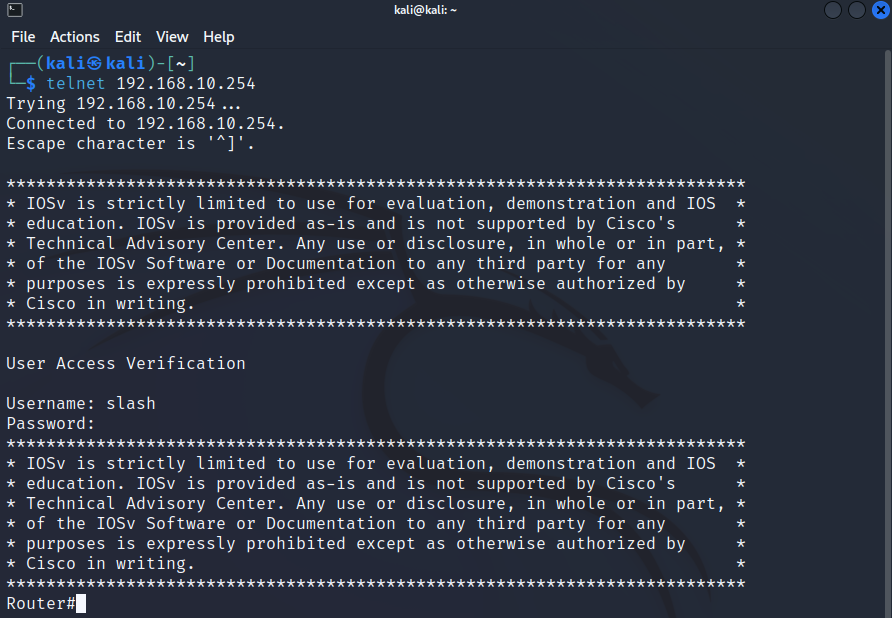
With connectivity proved, we can now put together a script to automatically login into the router, setup the remaining interfaces and logout. To do this we are going to use Python3 in conjuction with the telnetlib module. The script looks like this:#!/bin/python3 import telnetlib import getpass ip = '192.168.10.254' username = input('Enter username: ') password = getpass.getpass() session = telnetlib.Telnet(ip) session.read_until(b'Username: ') session.write(username.encode('ascii') + b'\n') session.write(password.encode('ascii') + b'\n') session.write(b'conf t\n') print("Configuring interface gi0/1...") session.write(b'int gi0/1\n') session.write(b'ip address 192.168.20.254 255.255.255.0\n') session.write(b'no shut\n') print("Configuring interface gi0/2...") session.write(b'int gi0/2\n') session.write(b'ip address 192.168.30.254 255.255.255.0\n') session.write(b'no shut\n') print("Configuring interface gi0/3...") session.write(b'int gi0/3\n') session.write(b'ip address 192.168.200.2 255.255.255.252\n') session.write(b'no shut\n') session.write(b'end\n') session.write(b'exit\n') print(session.read_all().decode('ascii'))
The script is run on host1 (don't forget to make it executable 'chmod +x routerScript.py' in my case), which TELNETS into the router at 192.168.10.254/24 and executes the commands in order they appear ultimately assigning the interfaces the IPs stated, all within a second or 2. The output in the host1 terminal is as follows:
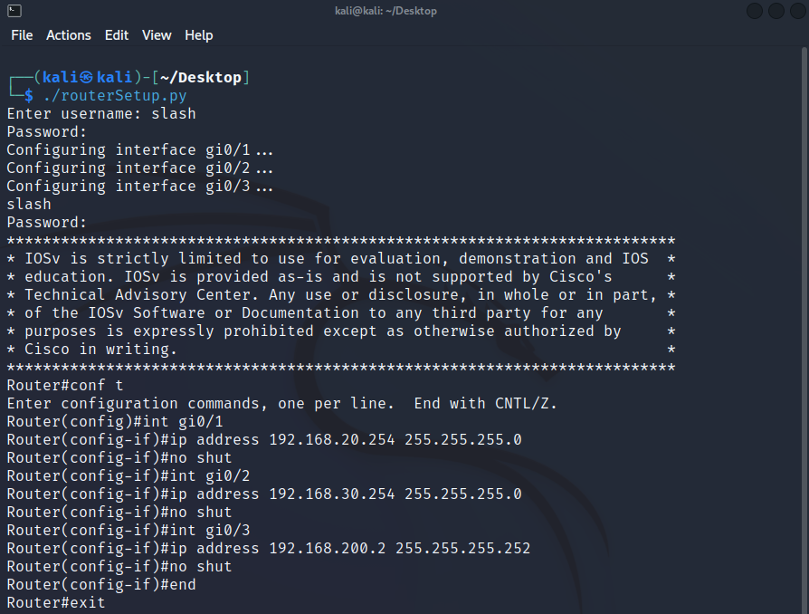
The output on the router in real-time is as follows: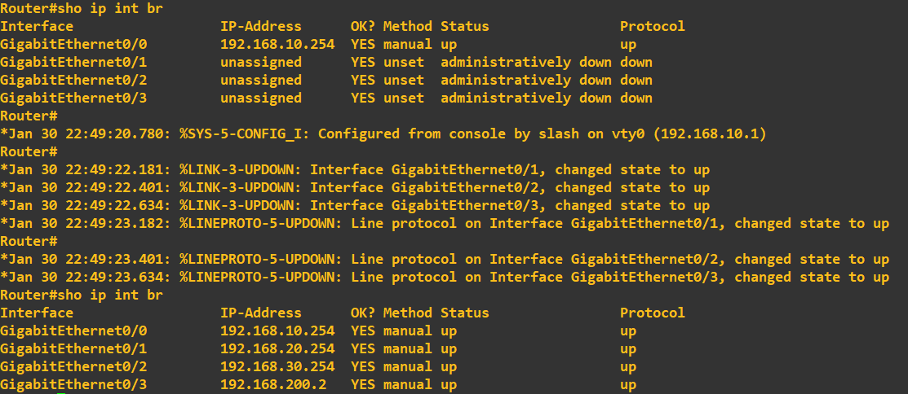
While not ground breaking at this level, these simple actions potentially saved us 2-3 minutes of manual configuration as well as removed the chance of us making any errors, typos etc. Another key benefit of this automated administration is these scripts can be saved and utilised at anytime - they are extremely handy when replacing hardware or recovering from an accidental configuration wipe.Note: Do not run network scripts without the expicit permission of the network administrator. Additionally, this TELNET connection would have appeared in clear text to anybody sniffing the traffic; always utilise secure communications if possible - in future demonstrations we will use Secure Socket Shell (SSH) and similiarily encrypted tools.